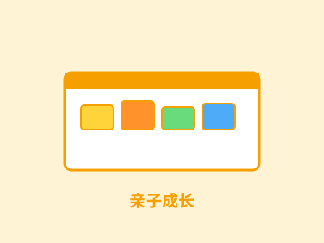

内部战略简报：市场破绽 → 双入口用户 → 定义与卖点 → 终局与阶段 → Phase 0 十二周作战计划。行文只讲要点，论断可回溯三份调研与 PLATFORM.md v2.1。
| 口径 | 数字 | 来源 |
|---|---|---|
| 谷子经济大盘（TAM 参照） | 1,689 亿元（2024，+40%）→ 2,000 亿（2025E）→ 3,000 亿+（2029E） | 艾媒咨询 |
| 泛二次元周边（参考） | 5,977 亿元（2024）；泛二次元用户 5.03 亿 | 艾媒咨询 |
| SAM：自制/个性化细分 | ~28 亿元/年（贴纸+小卡+咕卡 ~3.5% × 一二线 ~40%；手帐 48.7 亿 × 30% 交叉印证） | 调研 §2.1 |
| SOM（3 年） | 3,900 万 – 1.7 亿元/年（自上而下与自下而上交叉验证，相差 1.5 倍内） | 调研 §2.1 |
量级判断：贴纸楔子的 SOM 是「千万级营收/年」的生活方式生意，不是百亿平台叙事。管道可平移小卡/立牌/贴膜。三收入线（订单+耗材+佣金）利润结构比纯佣金平台更厚。
| 类型 | 玩家 | 模式 | 关键事实 |
|---|---|---|---|
| 平台型定制 | 柔造（A+ 轮）、映糖（自称 1000W+ 用户）、若映、米图师等 7+ 家 | AI 前端 + 聚合订单 + 派单产业带工厂（无自有产能） | 一件起订已验证；吧唧 1.2-2 元、小卡 0.5-0.65 元/张；小程序主阵地 |
| 代做小作坊 | 淘宝 / 闲鱼店铺（海量） | 传图-沟通-等货 | 批量 5 元 / 200 张；分摊单张 0.5-2 元 |
| 自购硬件 | 极印 S1、汉印、米家、惠普 | 用户自购打印机 | S1 近 1,500 元；实测 819 元机器需印大几千张回本 |
| 替代方案 | 快印店 / 文印店 | 线下即取 | 标签逻辑，不懂圈层审美，不能自由排版 |
所有平台「上传→中央工厂→快递 3-7 天」；NGA 用户提醒柔造「预留制作和发货时间」；小单排大单后面。归属：平台型全体
一件起订 ≠ 按张计价；无累进凑单结构。归属：平台型全体
工具全是「上传为主+模板辅助」；代做更是只传图等收货。归属：平台型 + 代做
代做不敢传私人照片（手帐/庆生/亲子/宠物照片即隐私）。归属：代做小作坊
年轻群体买不起也不常用，闲置浪费。归属：自购硬件
吧唧 ¥0.99、小卡 ¥0.5——拼单价的路已挤满 7+ 家。归属：平台型全体
五平台共同指向一个空白：没有人做「即时创作 + 就近履约」；「高体验 × 低价」象限无人占据。我们带着不同入场券（S1 硬件资产）入场，不打价格战、不做「又一个柔造」。
| ICP-A 谷圈 / 手帐圈层 | ICP-B 年轻父母（含毛孩子家长） | |
|---|---|---|
| 年龄 | 15-25 岁学生 / 初入职场 | 25-35 岁 |
| 触发场景 | 无料制作、痛包痛桌、手帐装饰、吧唧自制 | 亲子成长记录、宠物贴纸（猫爬架/宠物用品/手机壳）、纪念品 |
| 频率 | 周级（高频创作者） | 月级（事件驱动） |
| 付费意愿 | 单次 20-70 元 | 单次 30-100 元，价格容忍更高 |
| 渠道 | 小红书 / B站 / 超话 / QQ群 | 母婴群 / 宝妈社群 / 朋友圈 / 商场线下 |
| 独特优势 | 密度与复购来源；圈层「订阅制」心智（手帐月消费 ~500 元） | 照片即隐私——隐私卖点最锐利；竞争真空（无人服务此线）；客单更高 |
排序策略：双入口对照，Phase 0 数据定主次。两线并行投放当 A/B 实验——谷圈线走小红书 KOC + 漫展摊位；亲子线走宝妈社群 + 商场快闪。Gate 0 出分渠道 CAC / 转化 / 客单 / 复购对比报告。

给喜欢的角色做无料（漫展交换礼物）；痛包痛桌装饰；吧唧自制；手帐贴纸月度补充。
孩子照片做成贴纸贴冰箱/成长册/儿童房；全家旅行照做纪念贴纸；生日礼物。
宠物抠图贴猫爬架/宠物用品/手机壳——毛孩子家长为孩子做贴纸的心智。
共性：内容是「我在乎的」（角色/孩子/毛孩子），图是现成的（有图人群），情感价值 > 功能价值。
SOD 是「在线创作—下单—当日到手」的贴纸 DIY 服务：上传自己的图，在浏览器里亲手设计，不用买机器、不用凑起订量，按张计价，成品就近履约当日达/到店自提。
口语化版本：「把你在乎的东西，变成能贴出去的实体。」
浏览器里自己排版、实时预览，到手是「这是我做的」。
打：工具全是上传型 + 代做零参与感
创作在自己设备完成，抠图上云即删。
打：代做把照片交给陌生人 → 亲子/宠物照片不敢外传
一张起订、累进计价（第 5 张起 5.9）。
打：全场按批卖 → 1,500 元门槛被拆掉
同城当日达/到店自提。
打：全场 3-7 天 → 即时满足。尚未证明，见下页
验证标尺 = Gate 0 的当日达兑现率 ≥80%。做不到，就把「快」降级为次日达叙事，回供给布局层重审。先做到，再说话。
消费端创作平台 + 分布式微产能履约网络：SOD 品牌直连消费者做入口，购买商家套件的小商家与个人用户就近履约。
订单毛利 + 硬件 + 耗材 + 佣金——比纯佣金平台更厚
平台接单、节点履约——后置实施，Phase 0 只做自营
产品毛利驱动，非纯佣金
跑通「创作→下单→履约」全链路，验证付费意愿与当日达可行性，双入口数据定主次。
把 Phase 0 的 SOP 卖给首批外部商家（S1 重度用户 + 倒闭谷子店店主），B2B 单显性化承接。
自营转标杆店，城市复制，佣金+耗材成为主要毛利；市集在前置条件达标后开放。
PCV 18/24 的最大缺口——设计伙伴验证仅 2/5。
量化出口：创作→下单转化 ≥8% + UE 边际 ≥0
核心差异化主张的可行性——立不住则退化为「又一个柔造」。
量化出口：当日达兑现率 ≥80% + 自提占比 ≥40%
亲子/宠物线 vs 谷圈线，哪条是主攻——不拍脑袋，用数据定。
量化出口：双入口对照报告（CAC/转化/客单/复购）
责任域拆解：产品（Web App/支付/埋点）· 履约（自营节点 SOP/挂机谈判）· 获客（两线 KOC/漫展快闪/分渠道 CAC）· 用户研究（20 人访谈）· 数据（跑单表格/UE 账本/Gate 0 看板）。
| # | 指标 | 门槛 | 验证什么 |
|---|---|---|---|
| 1 | 周订单 | ≥100 | 需求真实 |
| 2 | 创作→下单转化 | ≥8% | 体验成立，付费意愿代理 |
| 3 | 30 日复购 | ≥15% | 黏性成立 |
| 4 | 单均 UE 边际 | ≥0 | 自营都不赚钱外包更不可能 |
| 5 | 全链路 SOP 文档化 | 完成 | 可复制给外部商家 |
| 6 | 当日达兑现率 | ≥80% | 「快」主张的可行性 |
| 7 | 自提占比 | ≥40% | 全要快递则「快」的成本结构不成立 |
| 8 | 私域沉淀率 | ≥25% | 流量变自有资产 |
| 9 | 双入口对照报告 | 完成 | Phase 1 主攻方向的决策输入 |
1-5 为继承五项（需求/体验/黏性/经济/可复制），6-9 为 2C 四项（当日达兑现/自提/私域/双入口对照）。
| 数据 | 采集方式 | 分析节奏 |
|---|---|---|
| 订单与 UE | 飞书跑单表格（每单：渠道来源、耗材成本、人力分钟、配送费、客诉） | 周复盘：单均 UE、分渠道客单 |
| 获客 | 每张券/每个 KOC 链接/每场线下活动独立标记 | 周复盘：分渠道 CAC；W11-12 汇总双入口对比 |
| 转化漏斗 | Web App 埋点（访问→上传→编辑→下单） | 周复盘：漏斗卡点定位 |
| 履约时效 | 订单表格时间戳（下单→拼版→打印→送达/自提） | 周复盘：当日达兑现率、自提占比 |
| 复购与私域 | 30 日复购标记、企微入群标记 | W7 起双周追踪 |
| 总张数 N | 用户实付 | 我方成本 | 毛利 |
|---|---|---|---|
| 1 | 14.9 | 10.35 | 4.55 |
| 2 | 19.8 | 13.90 | 5.90 |
| 5 | 41.5 | 24.55 | 16.95 |
| 10 | 71.0 | 42.30 | 28.70 |
累进计价：1-2 张 9.9 / 3-4 张 7.9 / 第 5 张起 5.9；N=1 收运费 5 元，N≥2 包邮。毛利随 N 严格单调递增；第 5 张起边际毛利率 39.8%，整体收敛 ~40%——对实体商品健康。自提口径 = 1.8 + 3.55N（省 5 元运费）。
自提省 5 元运费/单，是单均 UE 最大杠杆——这就是自提占比 ≥40% 进 Gate 0 的原因。
人工 0.8 元/张是半人工估算，流程熟练+并单打印后降幅最大——跑单账本记「人力分钟数」正是为此。
第二单毛利 5.90 元 > CAC 期望 1.60 元，回本只需 ≥36% 用户下第二单——复购 ≥15% 是底线，36% 是回本线。
CAC 期望 ~1.60 元/人（SOD.md 测算锚），双入口实测可能上浮——分渠道记录，不买量。
全场都慢、都不能亲手调、都按批卖——我们用「快（待验证）、亲手、按张」占住这个真空；亲子/宠物线与谷圈线双入口并行，Phase 0 十二周拿数据定主次；UE 框架已立、数字待实测；每一步都有 Gate 门槛纪律。